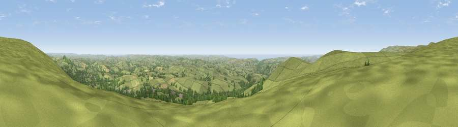

Viewpoint near Moorhaven Village
#1164 in England · top 2% of its area beats it · near Moorhaven VillageThe view, rendered

A 360° render of this exact spot computed from the terrain model, tree cover and land cover — summer colours, afternoon light, calibrated against photographs of famous viewpoints. Real trees, hedges and buildings will differ in detail.
The panorama
Grey silhouette: terrain skyline in each direction (720 bearings, Earth curvature and refraction included). Dashed green: skyline with trees (+15 m) and buildings (+8 m) as obstacles. Blue strip: how far the ground is visible on each bearing.
Where the view opens
Wedge length = distance to the farthest visible ground on that bearing (vegetation-aware). Rings at 10, 25 and 50 km.
What fills the view
73% grassland · 18% woodland · 6% cropland · 3% water · 1% built-up
Angular shares of the visible panorama (visual magnitude), not map area. Landscape diversity 0.37 (0–1 Shannon).
Key numbers
More beautiful places nearby
The staircase of upgrades: each row has a higher view potential than everything closer. Driving times are estimates from straight-line distance, calibrated against real road routing — check an actual route before setting out.
| Place | Direction | Drive | Score |
|---|---|---|---|
| Ugborough Beacon | N · 0 km | ~1 min | 79.5 |
| Western Beacon | SW · 2 km | ~5 min | 81.9 |
| Viewpoint near Lee Moor | WNW · 12 km | ~22 min | 82.7 |
| Viewpoint near Hope | S · 20 km | ~34 min | 84.4 |
| Viewpoint near East Prawle | SSE · 25 km | ~40 min | 84.6 |
| High Peak | ENE · 51 km | ~73 min | 85.3 |
| Pencarrow Head | W · 52 km | ~73 min | 86.0 |
| Viewpoint near Lesnewth | WNW · 64 km | ~87 min | 87.7 |
50.41324, -3.87643 · source: screening · position refined by local search. Computed location — check access rights before visiting.